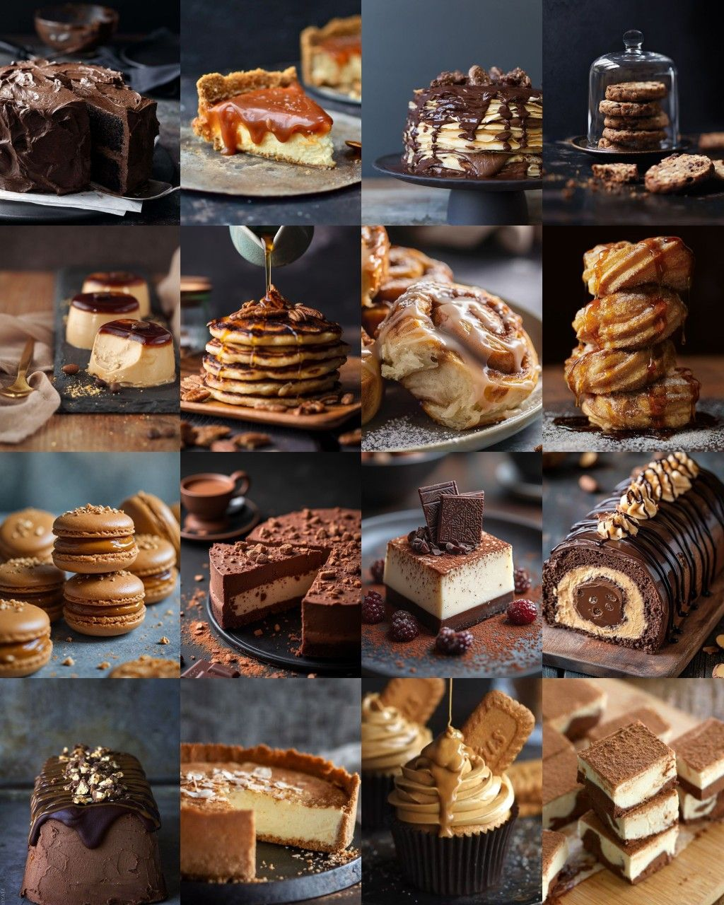
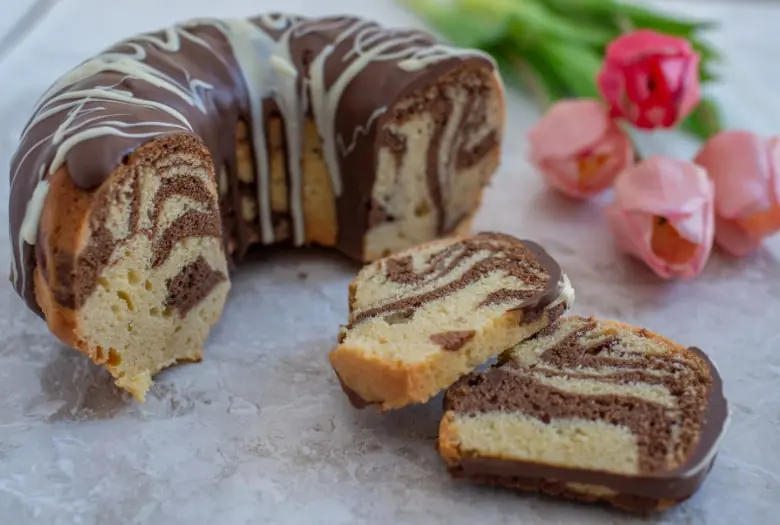
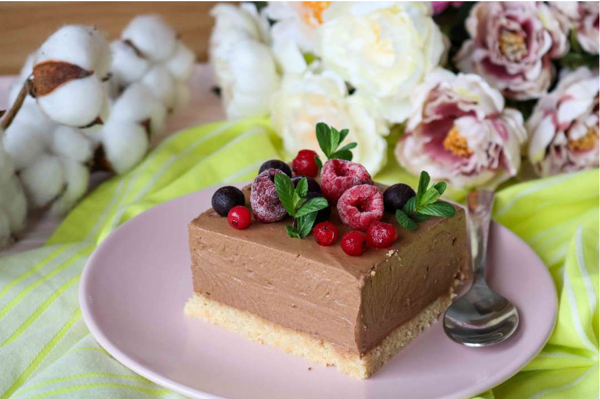
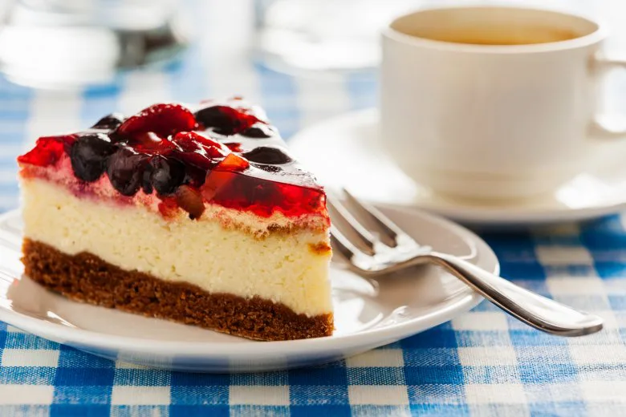
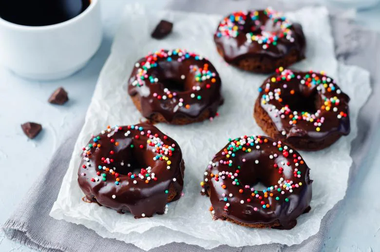
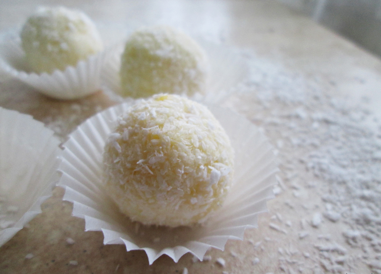

From handcrafted desserts to sweet everyday refreshments.


Marble orange bundt cake
"There are countless recipes out there, but we always love returning to the traditional, comforting flavors of our childhood. This marble orange bundt cake is a true classic. After all, who can resist a warm cup of coffee paired with a homemade cake packed with orange and chocolate goodness?" Ingredients: 4 eggs 1.5 cups sugar 1 cup vegetable oil 1 cup milk 2.5 cups extra white flour (Zito Luks or all-purpose flour) 1 packet baking powder (~10g) 1 packet vanilla sugar (~8-10g) Grated peel of 1 orange 1–2 tbsp cocoa powder 100g dark/baking chocolate (for decoration) 50g white chocolate (for decoration)
No-bake chocolate mousse
"Chocolate mousse is a decadent dessert featuring a velvety texture and an intense chocolate punch. When picking chocolate for this recipe, I always suggest going for a higher cocoa percentage—the more cocoa, the richer and deeper the flavor. What’s even better is that it's a completely no-bake dessert that’s wonderfully quick and simple to make. Even if you’re a total novice when it comes to sweets, this mousse is guaranteed to impress everyone like a masterpiece from an experienced baker." For the base: 200g crushed biscuits (or graham cracker crumbs) 2 tbsp sugar 1 packet vanilla sugar (~8–10g) 150g melted butter For the chocolate mousse: 250g melted chocolate (high cocoa content) 2 packets whipped topping powder (or heavy cream mix) 250ml milk 1 tsp instant coffee (dissolved in 2 tbsp hot water) 4 egg yolks 4 egg whites 2 tbsp powdered sugar ½ packet gelatin (dissolved in 2 tbsp cold water, then melted over steam)
Cheesecake
"The world-famous cheesecake has easily become a local favorite, and we love making it because it’s quick, easy, and completely no-bake! While it looks impressive, even beginner bakers can pull it off using our tested recipe. Refreshing, smooth, and visually stunning, this cheesecake is perfect for warm sunny days, special occasions, or as a sweet homemade gift for a loved one's birthday. No oven needed—just simple ingredients for an irresistible dessert." Ingredients: For the base: 125g butter or margarine 100g powdered sugar 300g crushed biscuits (or graham cracker crumbs) 120ml orange juice (freshly squeezed or store-bought, to taste) For the filling: 400g cream cheese 150g powdered sugar 500ml heavy whipping cream 180g sour cream (20% fat) 1 packet gelatin 50ml water For the topping: 300g mixed berries (strawberries, blueberries, sour cherries, chokeberries) 400ml water 100g sugar 1 packet gelatin
Baked chocolate donuts
"Who can resist hot, freshly baked chocolate donuts? They’re a healthier, baked alternative to traditional fried donuts—and just as delicious! Super quick and easy to make in a donut pan or donut maker, they’re perfect for kids' parties or weekend sweet cravings. Trust us, these will be gone before you know it" Ingredients: 1½ cups flour ½ cup cocoa powder 2 tsp baking soda ¼ tsp salt 1 egg ¾ cup sugar 3 tbsp vegetable oil ¼ cup sour cream 1 packet vanilla sugar (~8–10g) ½ cup milk For the glaze: 150–200g dark chocolate (baking chocolate) 2 tbsp vegetable oil